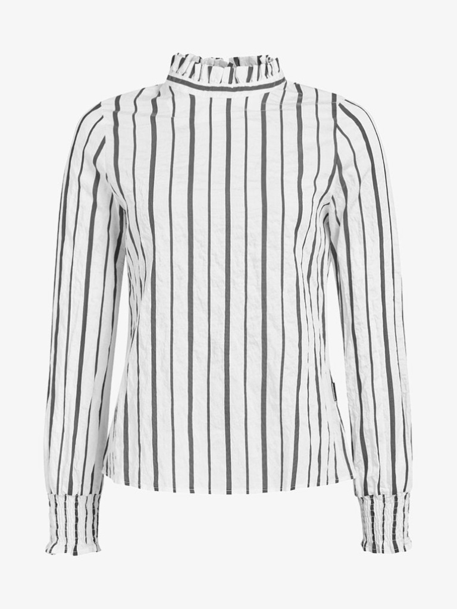
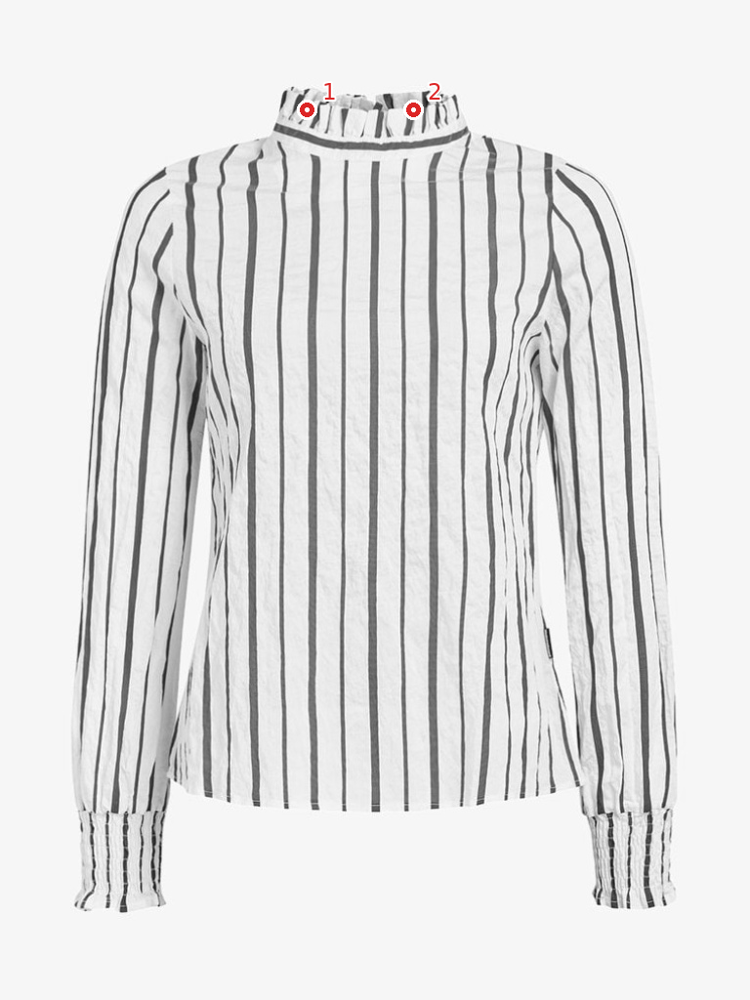

Molmo points on one flatlay
See these points on the generated try-on →
Original Molmo-7B-D-0924, using the paper’s top ten component names. Dots are the returned coordinates: no SAM3 masks and no manual coordinate edits.
One detail category at a time. Use Previous / Next or the left / right arrow keys.
1 / 10 · collar
False positives: this blouse has a ruffled collar, not lapels. Molmo placed its lapel points on the collar.
Original flatlay · 05504_00
collar · 2 returned points
Only collar points are shown. Coordinates are unchanged.
Open this detail full size · Raw responses and normalized XY coordinates
Molmo’s response for this detail
This is one example, not a ten-category accuracy benchmark. Zero returned points do not independently prove absence.
Model and coordinate format
allenai/Molmo-7B-D-0924 · cab33fb7f1a40091911f81165f8481920621948f. Each component receives “Point to all the … on the garment.” Coordinates are normalized to [0,1] relative to the original image, matching the trained DINO expert’s point-coordinate convention. No DINO or VTON training ran for this example.